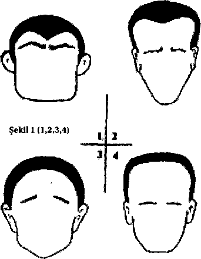
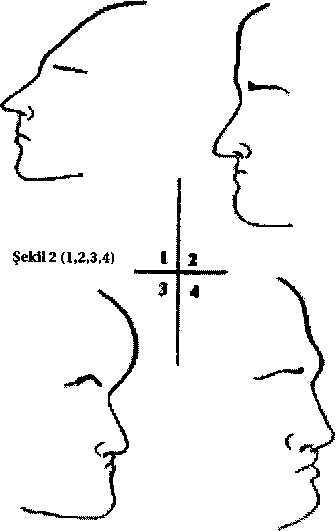
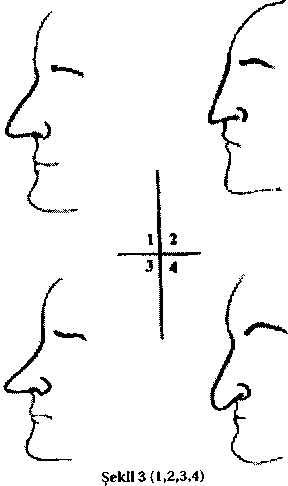
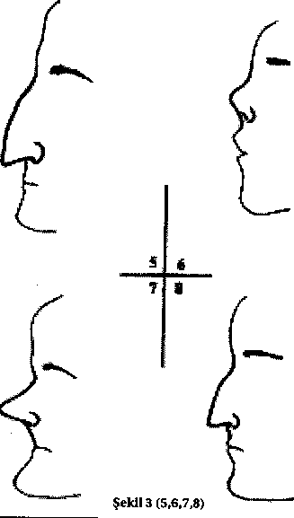
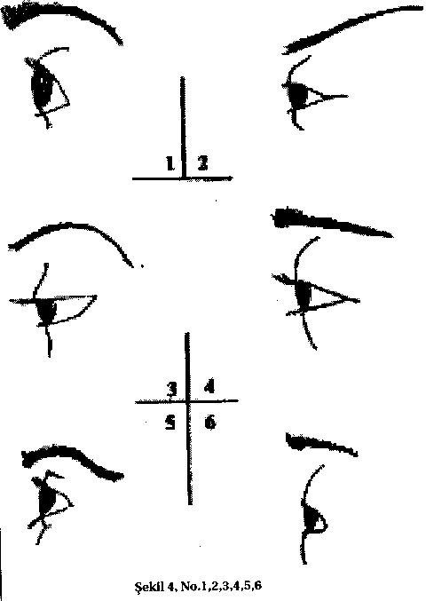
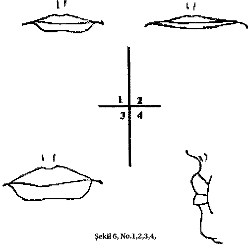
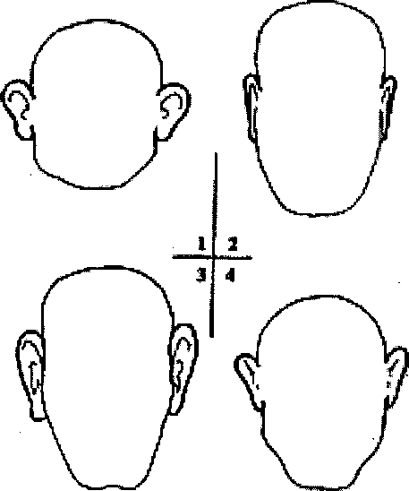
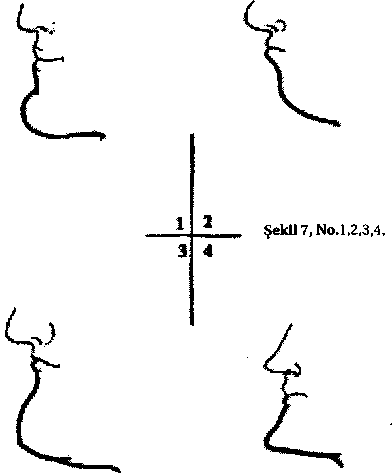

23. Şöhret tutkusu
24. Tedbirlilik, ölçülü davranma.
Gall'm sistemi dışında başka sistemler de mevcuttu (Örneğin, "Spurzheim sistemi"). Ayrıca ünlü frenoloji bilim adamı Casare Lombroso'yu örnek gösterebiliriz. Bir hekim olan Casare Lombroso mahkumların kişilikleri üzerinde incelemeler yapmış, bunların birçoklarını gözlem altında bulundurmuş, huy ve hareketlerini, düşüncelerini, yaşayış ve geçmişlerini araştırmış; cezaevlerinde ölen mahkumların cesetleri üzerinde otopsiler yapmıştır. Bütün bu deneylerden sonra Lombroso bazı insanların suçlu olarak doğdukları kanaatine varmıştır.
Lombroso'ya göre, doğuşta suçlu adı verilen bu suçlular, bedenlerinde bulunan bazı gayri tabiilikler, stigmat veya anomaliler ile ayrılırlar.
Fizik,, biyolojik ve psikolojik olarak sınıflandırılan bu anomaliler onları iradeleri.dışında suç işlemeye yöneltir. Lombroso'ya göre, fizik anomalleri çeşitli suçlu kategorilerinde başka başkadır. Örneğin, adam öldüren ve hırsızlar, bakışlarının ve fizyonomilerinin belirtileriyle birbirinden ayrılırlar. Adam öldürenlerin bakışları soğuk, donuk, sabittir; gözleri kanlıdır. Hırsızlarda ise bakışlar hileli, hareketli ve gözler eğridir.
Yüz yapısı, beden yapısı ve insan karakter arasında bağlantı kuran görüşler belli bir zaman sonra eleştirilere uğramış ve hesap olunmaya başlamıştır. Fakat, bu sistemler, çağdaş psikolojide birçok hususta temel dayanak oluşturmuştur. Yüz __________________________________________________________________
© WWW.MAXIMUMBILGI.COM
Araştırma Serisi No.13 Yüz Okuma Sanatı
¯¯¯¯¯¯¯¯¯¯¯¯¯¯¯¯¯¯¯¯¯¯¯¯¯¯¯¯¯¯¯¯¯¯ ¯¯¯¯¯¯¯¯¯¯¯¯¯¯¯¯¯¯¯¯¯¯¯¯¯¯¯¯¯¯¯¯¯¯
12
biçimi ve beden yapısı, iç salgı bezlerimizin oluşturduğu dengeleşmeyle, karakter ve şahsiyet özelliklerimiz arasındaki ilişkiler, frenolojiyi geliştirenler tarafından bilimsel olmayan yöntemlerle araştırılmıştır. Ancak değişen çalışmaların özü değil, yalnızca yöntemleri olmuştur.
__________________________________________________________________
© WWW.MAXIMUMBILGI.COM
Araştırma Serisi No.13 Yüz Okuma Sanatı
¯¯¯¯¯¯¯¯¯¯¯¯¯¯¯¯¯¯¯¯¯¯¯¯¯¯¯¯¯¯¯¯¯¯ ¯¯¯¯¯¯¯¯¯¯¯¯¯¯¯¯¯¯¯¯¯¯¯¯¯¯¯¯¯¯¯¯¯¯
13
2. BÖLÜM
ERZURUMLU İBRAHİM HAKKI'NIN "MARİFETNAME"Sİ
İslam dünyasında gerek birçok bilim dalları, gerekse çeşitli araştırma usulleri Hint, Çin, Mısır, Iran ve Yunan'dan esinlenmiş, daha değişik şekillerde ortaya çıkmıştır. Bu alandaki çalışmalar bazen İslam'a aykırı olan usullerle (örneğin, kehanet), bazen de meşru usullerle yürütülmüştür. Bu çalışmaların meşruluğunu savunmada en temel dayanak ise İslam büyüklerinin (örneğin, Ali bin Ebu Talip, Cafer Sadık) bu gizli ilimlere vakıf oldukları yönündeki söylemler olmuştur.
Fizyognomi de gizli ilimler içinde yer almıştır. Değişik adlar (İlm-i Firaset, İlm-i Sima) altında toplanmış çeşitli metodlar ve tezler, o dönemde aşağı yukarı bugünkü fizyognominin işlevini yerine getiriyordu. Bilim adamları bu ilimlerin (veya uygulamaların) kaynağını müminin manevi gelişiminde aramışlardır.
Örneğin, firaset; ilham, keşf, sezgi, keskin idrak, kalp gözüyle görmek gibi anlamları içeren bir kavram olmuştur. Firasetin temelinde, takvanın kalpleri nurlandıran bir nimet olduğu ve göğse inşirah (genişlik, huzur) verdiği, bu vesile ile de müminin Allah'ın nuru ile bakabildiği düşüncesi yatmaktadır. Allah kulunu sevdiği zaman "onun gören gözü, işiten kulağı, tutan eli, yürüyen ayağı"
olduğu için tüm bu marifetleri Allah'ın bir nimeti olarak görmüşlerdir.
Müslüman bilim adamlarının başlıca özelliği ansiklopedik bilgiye sahip olmaları idi. Onlar, uğraştıkları çeşitli bilim dallarının verdiği avantajı kullanarak fizyognomiyle ilgili olarak birtakım görüşler ortaya atmış ve geliştirmişlerdir. Bu konudaki geleneksel görüşler değişik eserlerde geçmektedir. Örneğin, kalın dudaklı insanların zevkine düşkün, ince ve normalde sıkça kapalı duran dudaklara sahip olanların sıkı ağızlı oldukları belirtilmiştir, insanlarda küçük baş, aklın azlığına ve sır sakla-mamaya, büyük baş akla ve zekaya, yassı tepe baş
lakaytlık ve gamsızlığa, yanlardan basık baş huyu ve tabiatı dar ve hiddetli olmaya işarettir. Gaga burunlu insanlarda egemenlik ruhunun, kalkık burunlularda ise asiliğin olduğu ifade edilmiştir. Yüzün belirgin organları olan gözler, burun, ağız, çene, kulakların yanı sıra kaşlar, kirpikler, göz kapakları, gözleri rengi, derinin rengi, kırışıklar vs. ele alınan özellikler arasındadır.
18. yüzyılda yaşamış ünlü bilim adamı ve mutasavvıf Erzurumlu İbrahim Hakkı'nın (1705-1771) Marifetname'si ansiklopedik bir kitap olması itibariyle, fizyognomiye de büyük yer vermiştir. Olgun bir mutasavvıf olan İbrahim Hakkı, çok sayıda (bazı araştırmalarda bu sayı 15, 30, 50 ve hatta 70 olarak geçmektedir) eser yazmıştır. Bu eserler arasında en meşhur olanı ise Marifetname olmuştur.
Bu eser, kapsamlı ve olgun düzeyde bilgi edinmiş, çağındaki bilgi ve keşiflere yabancı kalmayan İbrahim Hakkı'nın eski ile yeniyi kaynaştırmaya çalıştığı bir kitaptır. Ona göre de yaşadığı dönemin bütün bilgilerini kapsayan ansiklopedik özellikte bir çalışmadır, İbrahim Hakkı bu kitabında kendinden önce yaşamış
__________________________________________________________________
© WWW.MAXIMUMBILGI.COM
Araştırma Serisi No.13 Yüz Okuma Sanatı
¯¯¯¯¯¯¯¯¯¯¯¯¯¯¯¯¯¯¯¯¯¯¯¯¯¯¯¯¯¯¯¯¯¯ ¯¯¯¯¯¯¯¯¯¯¯¯¯¯¯¯¯¯¯¯¯¯¯¯¯¯¯¯¯¯¯¯¯¯
14
İslam düşünürlerinin eserlerinden yararlandığı için, eserin fizyognomiyle ilgili bölümünü de okurken önceki dönemlerde fizyognomi ile ilgili görüşlerin neden ibaret olduğu konusunda da bilgi edinebiliriz. Nitekim, eserde de beden yapısı, yüz biçimi ve bedenin ayrı ayrı azaları ile insan karakteri arasındaki ilişkinin
"hikmet ehlinin" dilinden ayrıntılı bir şekilde sunulduğunu görmekteyiz.
Marifetname, "Mukaddime" ile üç "Fen" ve bir "Hatime" olmak üzere beş ayrı bölümden oluşmaktadır. Bu kısımlar da kendi içlerinde "Bab, Fasıl, Nevi" olarak ayrılmıştır (Bunların dışında başta ve sonda, birkaç sayfalık yazılar vardır).
Marifet-name'de, fizyognomi ile ilgili bilgiler 4. babın 5 faslının 3. ve 4.
nevilerinde yer almaktadır.
Marifetname'ye göre, Allah insan alemin en güzel şekilde süsleyip nurlandırmıştır. Bunun yanı sıra, insanları şekil ve karakter olarak değişik yaratmıştır. Sonra lütuf ve inayeti ile, şekli karakterin ve azayı da ahlakın belirtisi kılmıştır. Böylece, insan önce kendi görünümünden kendi karakterini tanımlayarak ihtimam ile ahlakını güzelleştirir. Daha sonra yakınları ve dostlarının dış görünümlerine fehm ve firasetle bakarak, onların iç hallerine ve ahlaklarına vakıf olabilir: Onlara ya ahlaklarına göre rağbet ve muhabbetle muamele eder, veya aklınca güzel idare ile geçinip gider.
İbrahim Hakkı, yüz yapısının (daha geniş anlamda vücut yapısı) karakter ile ilişkisini bir ilahi kural olduğunu ifade etmektedir. Bu anlamda fizyognomiyi öğrenmek ve bu vesile ile çevredeki insanlarla karakterlerine göre muamele etme gibi iyi bir sosyal iletişim metodu sunmaktadır.
Erzurumlu İbrahim Hakkı, yüz yapısı (kısmen vücut yapısı) ve insan karakteri ile görüşleri şiir şeklinde aşağıdaki gibi sunmaktadır: Burada, sadece yüz yapısı değil, vücut yapısı ve mimikler de ele alınmıştır.
Baş Organlarının Şekillerinin Hikmetini Bildirir
Ey aziz! Hikmet ehli demişlerdir ki: Cenab-ı Hak insanın vücudunu en mükemmel ve güzel şekilde yaratmıştır. Organların birbiriyle uyumu ve simetrisi, nezaketin ve güzelliğin örneği olmuştur. Bedenin güzelliğini, vasıflarını dil, bildirmek ve anlatmaktan acizdir. Yüzünün güzelliği, içinin temizliği ve kemali, huyunun yumuşaklığı, tabiatının iyiliği, konuşmasının pürüzsüzlüğü ile dünyada benzersiz bir yaratıktır. Hoş yürüyüşü, tatlı söyleyişi, güzel hareketi ve sevimli sesiyle alemin aklını almıştır. Güzelliğinin çekiciliği, canının tatlılığıyla dünyanın sevgilisi, irfan ehlinin beğendikleri olmuştur ve aşıklara ondan nice haller gelmiştir.
Cenab-ı Hak, şekil ve biçim verdiği insan bedenindeki dört karışımın (kan, balgam, safra, sevda) dumanından kıymetli saç ihsan etmiş, iki yumurtanın dumanından da erkeklerin göğüs ve yüzlerinden kıl yeşertmiştir. Ta ki saçla kadınlar süslü, bıyık ve sakalla erkekler belli ve kaşlarla herkes belirmiş ve tanınmış olsun.
__________________________________________________________________
© WWW.MAXIMUMBILGI.COM
Araştırma Serisi No.13 Yüz Okuma Sanatı
¯¯¯¯¯¯¯¯¯¯¯¯¯¯¯¯¯¯¯¯¯¯¯¯¯¯¯¯¯¯¯¯¯¯ ¯¯¯¯¯¯¯¯¯¯¯¯¯¯¯¯¯¯¯¯¯¯¯¯¯¯¯¯¯¯¯¯¯¯
15
Saçın siyahlığı fazlalığından, sarı oluşu balgamın çokluğundan, beyaz olması grizi, tabii hararetin zayıflamasındandır. Hararetin zayıflığı da fazla nezleli olmaktan, çok cima (kadınla birleşme) yapmaktan ve fazla üzüntü ve acı duymaktan ileri gelir. Fakat alnın nuru, gönüllerin başıdır, iki kaş, iki gözün gölgeliği ve nurlu yüzün hilali olmuştur. Gözlerin, burunla iki kaş arasında olmaları çarpmalardan korunmaları ve başın ön tarafında yaratılmış olmaları da vücudun bütün işlerinde ona yol gösterici olmaları içindir. Göz kapakları, göz yuvarlağının örtüsü ve onun kötü nazardan koruyucusu olmuştur.
Göz kapakları, gözü türlü etkilerden koruduğu gibi, uyku zamanında da göz yuvarlaklarına örtü vazifesini görür ve gözü süsleyen kirpiklerle birlikte gözü, toz duman gibi zararlı şeylerden korur. Göz bebeğinin siyah, etrafının beyaz oluşu, süs ve güzellik içindir. Göz nurunun siyah noktasında bulunması ona, organların en değerlisi sıfatını vermektedir. Göz bebeğinin, yuvarlağın ortasında oluşu, tabakalarının gereklerindendir.
Göz yuvarlağının oval olmasının sebebi; göz nurunun etrafa yayılmasını kolaylaştırmak içindir, insan kafasının yuvarlak oluşu, çarpmalardan sakınılması ve beyin organlarına daha geniş bir yer olması içindir.
Büyüklüğünün bu kadar olması, en uygun şekildir, insan yüzünün yuvarlak oluşu, güzelliğiyle güneş ve aya benzemesi içindir. Dudakların kırmızı, dişlerin inci gibi olmaları süs ve güzellik içindir. Burnun kıkırdak oluşu, hafif olması ve çarpmalardan zarar görmemesi içindir. Burun deliklerinin geniş olması kokuyu fazlaca ve çabucak alması ve sümüğün kolayca akabilmesi içindir.
Dişlerin keskinleri kesmek ve kırmak, enlileri öğütmek ve çiğnemek, dizilişlerinin düzenli oluşu, konuşma zamanlarında harflerin ve sesin düzgün çıkması içindir. Dilin kemiksiz oluşu, lokmayı ağızda hareket ettirmek, harfleri söyleyebilmek ve kelimeleri kolayca ifade edip bildirmek içindir. Dilin dudaklarda dişler tarafından hapsedilmiş olması az konuşması içindir. Dil bir olduğu halde göz ve kulakların iki oluşu, fazla görmek ve kolayca işitmek içindir.
Kulakların başın iki tarafında oluşu, hafif ve latif olmaları ve çarpmalardan zarar görmemeleri içindir. Boynun enlilik ve uzunluğunun bu şekilde, bu büyüklük ve biçimde oluşu, baş ile kolayca münasebet ve bağlantı kurması ve onun ağırlığına dayanabilmesi içindir.
Başın bir tek kemik olmayıp yedi omurdan meydana gelmiş olması, vücudun her tarafıyla kolaylıkla bağlantı kurması içindir.
İnsan başının, bütün organların üstünde ve yüksekte oluşu, şanının büyüklüğü ile ululuğunu duyurmak ve kendisinde bulunan akıl cevherinin kıymetini takdir ettirmek içindir. Başın, on duyu organının başlangıç yeri olması, onun şeref ve değerini artırmaktadır. Bu kadar organ ve kuvvetlerin böyle bir yerde (başta) toplanmış olması, Cenab-ı Hakk'ın kudretinin kemalini göstermek ve sanatının ululuğunu belirtmek içindir.
İnsan organlarının şekil ve biçimlerinden sezip anmakla ve bakışın, gönül ve cana olan emniyet ve selametini, lütuf ve kerametini bildirir __________________________________________________________________
© WWW.MAXIMUMBILGI.COM
Araştırma Serisi No.13 Yüz Okuma Sanatı
¯¯¯¯¯¯¯¯¯¯¯¯¯¯¯¯¯¯¯¯¯¯¯¯¯¯¯¯¯¯¯¯¯¯ ¯¯¯¯¯¯¯¯¯¯¯¯¯¯¯¯¯¯¯¯¯¯¯¯¯¯¯¯¯¯¯¯¯¯
16
Ey aziz, hikmet ehli demişlerdir ki:
Alemi bu şekil ve surette yaratan Cenab-ı Hak, eşi benzeri olan insan alemini en güzel şekilde ve en beğenilir surette tasvir edip şekil verdikten sonra ona üfürdüğü ruhu ile bezetmiş ve aydınlatmıştır ve hayvan cinsinden insan türünü, güzellik ve sevimlilikle benzetmiş, anlama ve konuşma yeteneğiyle üstün kılmıştır. Gerçi Cenab-ı Hak, insanların beden ve ruh bakımından bir yaratmıştır. Fakat insanlar zeka ve kabiliyette, huyda değişiktir, birbirlerinden farklıdır.
Sonra Allah, lütuf ve inayetiyle, hikmetinin gereğini, sanatının inceliğini bu yaratıkta göstermiş, yüzünü, şekil ve yapısını içine, organlarının biçimini ahlak ve karakterine belirti yapmıştır ki, insan kendi şekil ve yapısından kendi vasıflarım bilip ona göre ahlak ve hareketlerindeki, huylarındaki eksik ve aksaklıkları düzeltsin. Sonra arkadaş ve dostlarının vücut yapısı ve şekillerine bakıp zeka ve karakterlerini, huy ve tabiatlarını ince seziş ve zekasıyla bilsin ve buna göre onlara muamele etsin, beğensin ve sevsin veya aklını kullanarak karakterlerine göre hareket ederek onlarla geçinip gitsin veya onlardan uzaklaşıp emniyeti, rahat ve selameti bulsun ve ne kimseden incinsin ne de kimseyi incitsin. Gönül hoşluğu ile rahat oturup kalksın.
Ey akıllı, insan ve cinlerce cihan bağında beğenilen budur: Ne kimse senden incinsin, ne de sen bir kimseden incin.
"Güzel huylu insandan hayır isteyin." hadis-i şerifine göre, güzel ve sevimli insanlarda daima güleş, iyi huy ve tatlı sözlerin görüp işitildiği gerçeği duyurulmaktadır.
Kur'an-ı Kerim'de "Herkesin iş ve ameli şekline uygundur." buyurulması da buna işarettir.
Baş ve boyun şekil ve biçimleriyle, bunlara bağlı huy ve tabiatlarım bildirir Ey aziz, hikmet ehli demişlerdir ki:
- Boyu uzun olanların kalbi saf ve temiz olur.
- Kısa boylu olanların hileleri, aldatmaları çoktur.
- Orta boylu olanlar akıllı ve hoş huylu olurlar.
- Saçları sert olan kimse, akılla atılganlığı bulur.
- Saçları yumuşak olan saf ve utanması az olur.
- Saçı sarı olanın işi, kibirlenme ve kızgınlıktır.
- Siyah saçlı olan sabırlıdır, onu ara.
- Kumral saç güzeldir, sahibi bedelsizdir.
- Saçı az olan lütufkar, anlayışlı ve nazik olur.
- Başı küçük olanın aklı azdır, gizli şeyin varsa ona söyleme.
- Başının tepesi yassı olan keder çekmez.
- Başının derisi ince olan, hayır yapar, zarar vermez.
__________________________________________________________________
© WWW.MAXIMUMBILGI.COM
Araştırma Serisi No.13 Yüz Okuma Sanatı
¯¯¯¯¯¯¯¯¯¯¯¯¯¯¯¯¯¯¯¯¯¯¯¯¯¯¯¯¯¯¯¯¯¯ ¯¯¯¯¯¯¯¯¯¯¯¯¯¯¯¯¯¯¯¯¯¯¯¯¯¯¯¯¯¯¯¯¯¯
17
- Kel adama yaklaşma, kötü huylu olur, ondan sakın.
- Alnı dar olanın, içi de dar, sıkıntılı olur.
- Alnı yumru olan, çirkin ve kalın kafalı olur.
- Alnı enli olan kötü huylu olur, çünkü hastadır.
- Alnı normal olanı emin bil.
- Alnı buruşuksuz olan, şüphesiz tembel olur.
- Alnı uzun olan anlayışlı, az ise cömert olur.
- Kaşlarının arası buruşuk olan, üzüntü yükünü taşır.
- Kulağı çok büyük olan, bilgisiz ve tembel olur.
- Küçük kulaklı eğri, orta (normal) kulaklı doğru olur.
- Kaşının ucu ince olanın, işi gücü fitnedir.
- Kaşının kılları çok olanın, üzüntüleri de çok olur.
- Kaşı açık olan doğrudur, çatma olan eğridir.
- İnce kaşlı güzel olur, uzunu ise kibirli olmanın delilidir.
- Kaşı yay gibi olan, her zaman güzel olur.
- Göz çukuru az olursa, o kibirli olmaya delildir.
- Siyah gözlüler itaatli, kızıl gözlüler cesur olurlar.
- Gök gözlü olan zeki, ela gözlü olan edepli, terbiyeli olur.
- Küçük gözlü hafif, büyük gözlü zarif, narin olur.
- Gözü yumru olan kıskanç, orta olan dost olur.
- Yarı kapalı göz ayıp, bakışı miskince olur.
- Köre yakın olma, sık bakan, emniyetli olmaz.
- Gözü şaşı adama bakma, çünkü o sana eğri bakar.
- Güleç gözlü olan güzeldir, kirpiği sık olan bedelsizdir.
- Büyük yüzlü olan illetlidir, küçük yüz kibirlenmeye delildir.
- İnce yüzlü sevimli, kalın yüzlü hor (sevimsiz) olur.
- Uzun yüzlü olanlar yalancı olurlar.
- Ekşi yüzlü, somurtkan olanların, sözlerinin çoğu acı olur.
- Yuvarlak yüzlüler, ay'dan daha nurlu olur.
- Böyleleri çok güleç olur, onu gören muradını alır.
- Benzi kızıl olan terbiyeli, esmer olan da zeki olur.
- Benzi sarı olan illetli, siyaha çalan da tevekkelli olur.
- Burnu uzun olanın idraki (anlayışı) az olur.
- Kısa burunlu olanlar fazla korkak olur.
- Burun ucu top olan, neşeli olur.
- Burun ucu ağzına yakın olan adamdan sakın.
- Burun delikleri geniş olanın içi kibir ve kıskançlıkla doludur.
- Burun kanatlan dar olan kişide küsme ve inat çok olur.
- Burnu enli olan kimse şehvete tutkundur.
- Burnu eğri olan kimsenin düşüncesi, işi başarıya ulaştırmaktır.
- Küçük ağızlı olan güzel ve fakat çok korkak olur.
- Büyük ağızlı cesur, eğri ağızlı kötü olur.
- Genizden söylenen sözler, kibirlenmeden olsa gerek.
- İnce sesli erkeklerin işi, kadına şehvet duymaktır.
- Erkek sesli kadınların çoğu yalan söyler.
- Çabuk konuşan, ince anlayışlıdır.
- Kaba sesli olanın gayreti ve yardımseverliği fazladır.
- Çatal sesli olan, halktan kötülük geleceğini sanır.
__________________________________________________________________
© WWW.MAXIMUMBILGI.COM
Araştırma Serisi No.13 Yüz Okuma Sanatı
¯¯¯¯¯¯¯¯¯¯¯¯¯¯¯¯¯¯¯¯¯¯¯¯¯¯¯¯¯¯¯¯¯¯ ¯¯¯¯¯¯¯¯¯¯¯¯¯¯¯¯¯¯¯¯¯¯¯¯¯¯¯¯¯¯¯¯¯¯
18
- Yüzü güleç, sözü tatlı olan insan azizdir, sevilir.
- İnce ve kırmızı dudaklı kimse, söyleneni iyi anlar.
- Bil ki kalın dudaklının kızgınlığı ağırdır.
- İri dişliler, çok defa yaman işler yapar.
- Normal dişi olanların, işi hoş ve doğrudur.
- Kokusu hoş olanın, huyu da güzeldir, hoştur.
- Çene kemiği ince olanın, aklı da hafif olur.
- Enli çenenin sahibi kaba olur.
- Çenesi normal olan, akıllı ve güzel olur.
- Uzun sakallı kişi hünersiz olur.
- Sık sakallı kişi kabadır, sohbetini de uzatır.
- Siyah ve az sakallı olmak zekaya delildir.
- Hiç kılı olmayan köse adamın hilesi çok olur.
- Sakalı değirmi olanın kemali de çoktur.
- Kafası enli olan ahmaklık illetine tutuktur.
- Boynu çok uzun olanın olgunluğu az olur.
- Boynu ince olan cahil olur.
- Boynu kalın olan gece gündüz yiyici (obur) olur.
- Boynu kısa olanın hilesi çok olur.
- Boynu normal olanın işi iyilik yapmaktır.
- Her uzvu normal olan, şüphesiz ki güzel olur.
5. nevide ise bedenin diğer uzuvlarının (omuz, kol, parmak, tırnak, göğüs vs.) insan karakteri ile ilişkisi ele alınmıştır.
Marifetnamenin bir çok konulan gibi, fizyognomiyle ilgili kısmı da ayrı bir araştırma gerektirmektedir.
__________________________________________________________________
© WWW.MAXIMUMBILGI.COM
Araştırma Serisi No.13 Yüz Okuma Sanatı
¯¯¯¯¯¯¯¯¯¯¯¯¯¯¯¯¯¯¯¯¯¯¯¯¯¯¯¯¯¯¯¯¯¯ ¯¯¯¯¯¯¯¯¯¯¯¯¯¯¯¯¯¯¯¯¯¯¯¯¯¯¯¯¯¯¯¯¯¯
19
3. BÖLÜM
YÜZ YAPISI - İNSAN KARAKTERİ
İLİŞKİSİNİN GÜNÜMÜZDEKİ UYGULAMALARI
XX. yüzyılda sanayinin gelişimi işletme, yönetim, insan kaynakları alanlarında çeşitli yöntemlerin uygulanmasına neden olmuştur. Çok sayıda deneyler yapılması yoluyla yüz okumayı yeni temele oturtma çabaları olumlu sonuçlar vermeye başlamış ve geniş uygulama alanı bulmuştur. 1940'lı yıllarda Amerikalı hukukçu Edward Vincent Jones, yüzün dilini araştırmak üzere bir enstitü kurmuştur. Bunu izleyen yıllarda Robert L. Whiteside ve William F. Burtis'in bu konudaki kapsamlı çalışmasında altmış sekiz ana yüz özelliğini bin iki yüz denek üzerinde test etmiş ve sonuçların istatistik analizinde yüzde doksan üç oranında başarıya ulaştığını belirtmiştir.
Günümüzde dünyanın birçok üniversitelerinin sosyal psikoloji bölümlerinde yürütülen araştırmalar, yüz okumanın bilimsel temellerini oturtmaya çalışmaktadır. Dünyaca ünlü firmaların; MCI, General Electric ve American Airlines gibi devlerin, yüz okumayla ilgili danışmanlık hizmetlerinden ve eğitimlerinden yararlandıkları bilinmektedir.
ABD'de yönetim psikolojisinde ve mesleki faaliyetlerde (özellikle, işe kabul etme ve görevlendirme zamanı) fizyognomi yöntemlerine başvurulmaktadır. Örneğin, yönetici adaylarını seçerken, adayların fotoğrafları (yandan ve önden) 195 ayrı ayrı belirtileri içeren özel fizyognomi tablolar yardımıyla inceleniyor. Bundan sonra, inceleme sonuçlarına dayanarak neredeyse, başvuran adayların %80'i geri çevriliyor.
Fizyognomi bugün disiplinler arası bir araştırma dalı haline gelmiştir. Bu gün fizyognominin değişik eğitim programlarında zorunlu disiplin olarak okutulduğunu görebiliriz. Psikoloji, tıp ve biyoloji gibi doğrudan bağlantılı bölümlerin yanı sıra iletişim, istihbarat, polis, kriminoloji, turizm, işletmecilik, insan kaynaklan, ressamlık vs. gibi onlarca bölümde fizyognomi okutulduğunu görebiliriz. Kitabın sonraki bölümlerinde göreceğimiz gibi, bugün fotoğrafların incelenmesi yoluyla hastalara teşhis koyma, tarihi resim eserleri üzerinde inceleme yaparak tarihi şahsiyetlerin karakterlerini belirleme gibi metodlarda fizyognomiden başarıyla yararlanılmaktadır.
Son yıllarda Türkiye'de de söz konusu alana ilginin arttığı ve bu yönde bazı çalışmaların yapıldığını görmekteyiz. Konuyla ilgili çalışmalar yapan uzmanlar Mehmet Auf ve Dr. Murat Toktamışoğlu tarafından "Yüz Okuma, iş ve Sosyal Yaşamda Yüz Okuma Teknikleri" adlı bir çalışma yapılmıştır.
Birçok alanlarda; finans sektörü, ilaç, sigorta ve hizmet sektörü ile özel ve kamudaki birçok şirket bu konuda eğitim ve danışmanlık hizmetinden yararlanmaktadırlar. Uzmanlar, yüz okumanın falcılık ve geleceği okuma __________________________________________________________________
© WWW.MAXIMUMBILGI.COM
Araştırma Serisi No.13 Yüz Okuma Sanatı
¯¯¯¯¯¯¯¯¯¯¯¯¯¯¯¯¯¯¯¯¯¯¯¯¯¯¯¯¯¯¯¯¯¯ ¯¯¯¯¯¯¯¯¯¯¯¯¯¯¯¯¯¯¯¯¯¯¯¯¯¯¯¯¯¯¯¯¯¯
20
olmadığını söylerken, yüz okuma uzmanlarının, bilimsel geçmişleri olan ve konuyla ilgili bilimsel çalışmaları olan kimseler olduğunu da özenle vurgulamaktadırlar.
__________________________________________________________________
© WWW.MAXIMUMBILGI.COM


Araştırma Serisi No.13 Yüz Okuma Sanatı
¯¯¯¯¯¯¯¯¯¯¯¯¯¯¯¯¯¯¯¯¯¯¯¯¯¯¯¯¯¯¯¯¯¯ ¯¯¯¯¯¯¯¯¯¯¯¯¯¯¯¯¯¯¯¯¯¯¯¯¯¯¯¯¯¯¯¯¯¯
21
4. BÖLÜM
KOLAY FİZYOGNOMİ NOTLARI
İnsan yüzünün aşağıdaki ayırt edici çizgileri, ayrıca özgün bakış ifadeleri o insanın çeşitli yetenek ve eğilimleri hakkında fikir yürütmeye olanak sağlıyor.
Alın
¾ Alın (Şekil l, No. 1) - enerjik, gaddar, suç işlemeye yatkın, aşağılık içgüdüleri güçlü.
¾ Geniş ve köşeleri kabarık alın (Şekil l, No. 2) - hayal gücü kuvvetli.
¾ Hilal şekilli alın (Şekil l, No. 3) - dar kafalı,
burnunun ucundan ötesini göremeyen, rutin,
yetenekleri az, gizli yetersizliklere sahip.
¾ Enli ve yüksek alın (Şekil l, No. 4) - çok akıllı.
¾ Devrik piramit şekilli alın (Şekil 2, No. 1) -
melankolik- kurnaz, yalancı, aptal, bencil ve
serseriliğe yatkın.
¾ Dörtgen şekilli alın (Şekil 2, No. 2) - alçak
gönüllülük.
¾ Aşırı kabarık alın (Şekil 2, No. 3) - öfkeli, dar
kafalı, günlük yaşamında pratik.
¾ "Müzik bölgesi" kabarık olan alın (Şekil 2, No. 4)
- doğuştan müzik yeteneğine ve zengin iç
dünyaya sahip.
¾ Dar, ensiz ve geriye doğru basık alın -muhakeme
gücü zayıf. Sert ve ortası kabarık alın-
soğukkanlı, ağırbaşlı, sağduyulu. Düz ve ensiz alın - açık kalpli, hayırsever, saf.
¾ Aşırı gelişmiş alın - ufku geniş, gözlemleme yeteneğine sahip.
¾ Aşırı büyük alın - tembellik ve hareketsizlik.
__________________________________________________________________
© WWW.MAXIMUMBILGI.COM

Araştırma Serisi No.13 Yüz Okuma Sanatı
¯¯¯¯¯¯¯¯¯¯¯¯¯¯¯¯¯¯¯¯¯¯¯¯¯¯¯¯¯¯¯¯¯¯ ¯¯¯¯¯¯¯¯¯¯¯¯¯¯¯¯¯¯¯¯¯¯¯¯¯¯¯¯¯¯¯¯¯¯
22
¾ Aşırı düz alın - yumuşak karakter, bazen dar düşünceli ¾ Aşırı enli alın - hırçın, çabuk sinirlenen, kibirli.
¾ Aşırı küçük alın - hareketli, çevik (genelde manevi değerleri çok da yüksek olmayan).
¾ Küçük ve dar alın - işine özen göstermeyen.
Alın Kırışıkları
Düz, kırışıksız alın - kayıtsız, eğlenceye meyilli. Kaşlara yakın yatay kırışıkları olan alın - derin zeka. Saçlara yakın yatay kırışıkları olan alın - gaddarlık, kibirlilik Katman şekilli kalın kırışıkları olan alın - zekası orta düzeyde olan, tembellik, uyuşukluk.
Her tarafa yayılan kırışıkları olan alın - garip, orijinal. Burun tabanına doğru dikey kırışıkları olan alın - derin zeka.
Yatay, paralel ve az belirgin kırışıkları olan alın - sağduyulu, adil.
Dikey kırışıkları olan alın - derin zeka, enerjik, kibirli, şöhret tutkunu.
Derin ve zikzak şekilli kırışıkları olan alın - işte başarısızlık. Derin ve zikzak şekilli kırışıkları olan ensiz ve kemikli alın- arsızlık, yüzsüzlük ve her türlü kötü huylar. Tüm yönlere yayılmış eğri kırışıkları olan alın - geri zekalı, geçimsiz ve kaba.
Burun
¾ Büyük burun (Şekil 3, No. 1) - kibirli, şöhret
tutkunu, başına buyruk ve enerjik. Alnın
uzantısı şeklindeki burun (Şekil 3 No. 2) -şöhret
tutkunu. Uzun burun (Şekil 3, No. 3) - bencil,
şerefsiz, rezil, hırsızlığa meyilli ve ahlaksız.
¾ Ağza doğru sarkmış burun (Şekil 3, No. 4) -
hassaslık. Sivri uçlu kartal burun (Şekil 3, No.
5) - hırçın. Yuvarlak ve kalkık burun (Şekil 3,
No. 6) - ahlaksızlık. Tabanı çökük, ucu ise sivri
ve sarkık burun (Şekil 3, No. 7) ters, kıskanç,
meraklı, kurnaz ve ikiyüzlü.
¾ Gaga burun (Şekil 3, No. 8) - şair ruhlu.
__________________________________________________________________
© WWW.MAXIMUMBILGI.COM


Araştırma Serisi No.13 Yüz Okuma Sanatı
¯¯¯¯¯¯¯¯¯¯¯¯¯¯¯¯¯¯¯¯¯¯¯¯¯¯¯¯¯¯¯¯¯¯ ¯¯¯¯¯¯¯¯¯¯¯¯¯¯¯¯¯¯¯¯¯¯¯¯¯¯¯¯¯¯¯¯¯¯
23
¾ Düz burun - sakin.
¾ Öne doğru aşırı çıkmış, ortası oyuk burun -
enerjik.
¾ Kemerli kartal burun - gönlü bol, cömert.
¾ Ensiz burun - düşüncesiz.
¾ Enli burun - uysal.
¾ Kalın ve kırmızı burun - yemeğe ve şaraba
meyilli.
¾ Kalın, kısa, etli ve balon şekilli burun -
tutarsız, zayıf irade.
¾ Geniş delikli burun - çevik, şıpsevdi.
¾ Sağa veya sola meyilli eğri burun - kurnaz,
cimri.
¾ Küt ve yassı burun - aptal ve ahlaksız.
Göz
No.1. Büyük, yuvarlak ve geniş kapaklan
olan ve hafiften kan damlamış gibi
gözüken göz. Göz elmasında küçük kan
damarları gözükmektedir. Göz elması ise
hastalık çağrıştıran, bazen sarımsı bir sıvı
katmanla kaplıdır. Bir tek kelimeyle ifade
etmek gerekirse - "fal taşı gibi açılmış".
Kısa kirpikler, dik kılları olan yüksek
kaşlara sahip tipler çabuk sinirlenen ve
hırçın olup, fakat insan ve çocuk
sevgisinden, içten neşelilikten (ama esprili
değil) yoksun değiller.
No.2. Ensiz ve uzun kapakları olan, dış
köşesi ve kaşları şakaklara doğru kalkmış
göz. Kısa, fakat sık kirpikler arasından
keskin bir bakışla bakan gözbebeklerine
sahiptir. Göz kapakları sık sık daralıyor
(miyopluğu çağrıştırıyor). Bu tip insanlar
gözlemci, içine kapanık, gizemli, kurnaz,
ikiyüzlü, akıllı, cinsel konularda ihtiraslı,
dayanıklı ve aşırı bencildirler.
__________________________________________________________________
© WWW.MAXIMUMBILGI.COM

Araştırma Serisi No.13 Yüz Okuma Sanatı
¯¯¯¯¯¯¯¯¯¯¯¯¯¯¯¯¯¯¯¯¯¯¯¯¯¯¯¯¯¯¯¯¯¯ ¯¯¯¯¯¯¯¯¯¯¯¯¯¯¯¯¯¯¯¯¯¯¯¯¯¯¯¯¯¯¯¯¯¯
24
No.3. yarı inik üst göz kapağı altından gözbebeği sanki ışığa duyarsız gibi duruyor ve "bulanık göz" çağrışımı yapıyor. Kaşlar düzgün kavislidir. Göz kapaklarının rengi kaçmış. Kirpikler uzun ve seyrektir. Bunlar; korkusuz, gözüpek, başkalarının tutkularına derinden nüfuz edebilen, basiretli, parayla satın alınamayan ve ciddi, gaddarlığa varacak kadar adaletli tiplerdir.
No.4. Kapaklan şişmiş gibi, gözbebeği büyük ve ifadesiz gözler. Kirpikleri ve kaşları sık ve uzundur. Tek bir kelime ile ifade etmek gerekirse - "uyuşuk"
gözler. Bunlar; uyuşuk, kayıtsız, dar kafalı, enerjik olmayan, fakat bu pasiflik içinde gözlemleme yeteneğinden de yoksun olmayan tiplerdir. Bununla birlikte, bu tipler muhtemelen yumuşak karakterli oluyorlar.
No.5. Geniş açılmış, ruh halinin değişmesine bağlı olarak ifadesi de değişen gözler. Konuşma zamanı genelde doğrudan muhatabının gözünün içine bakar.
Kaşlar ortadan yukarıya doğru kalkıyor ve şakaklara doğru aşağı iniyor.
Kirpikler keskin bir şekilde yukarıya doğru katlanmıştır. Bunlar; enerjik, aktif, başına buyruk veya ters, rica ve emirlerin yavaş yerine getirilmesine tahammül edemeyen, cesur, kararlı, cesurluğu sayesinde aşırı açık sözlüdür.
No.6. Ağır göz kapakları arasından küçük görünen gözler. Gözbebeğinin hareketli olmasına rağrnen rengi kaçmış bir görünüm oluşturuyor. Kirpikleri seyrek, kaşları küçük ve seyrektir. Bunlar; yüksek manevi değerlere sahip olmayan, cimri, kurnaz, pratik ve uyanık tiplerdir. Yaptıkları iyilikler samimi-yetten değil, çıkarcılıktan kaynaklanıyor. Bencil ve riyakardırlar.
Dudaklar
¾ Hatları belirgin olan dudaklar
(hafiften şişkin) (Şekil 5, No. 1) - iyi
kalpli, samimi, içten, neşeli ve
genelde kötü huylardan çok iyi
huylara meyilli olan tipler.
¾ İnce dudaklar ( Şekil 5, No. 2) -
kurnaz, bencil, gaddar, alaycı,
gizemli, riyakar, sömürücü tipler.
¾ Kalın dudaklar (Şekil 5, No. 3) -
duyarlılık ve çeşitli aşağılık
içgüdüleri. Çok ender hallerde iyi
kalplilik..
¾ Ayırıcı çizgileri olan çocuksu dudaklar (Şekil 5, No. 4) - saf ve içten.
__________________________________________________________________
© WWW.MAXIMUMBILGI.COM

Araştırma Serisi No.13 Yüz Okuma Sanatı
¯¯¯¯¯¯¯¯¯¯¯¯¯¯¯¯¯¯¯¯¯¯¯¯¯¯¯¯¯¯¯¯¯¯ ¯¯¯¯¯¯¯¯¯¯¯¯¯¯¯¯¯¯¯¯¯¯¯¯¯¯¯¯¯¯¯¯¯¯
25
Kulaklar
¾ Büyük ve kepçe kulaklar (Şekil 6,
No.l) - hilekar. Yassı kulaklar
(Şekil 6, No.2) - tedbirli,
soğukkanlı, iradeli. Kulak
memesi bükük ve belirgin olan
büyük kulaklar (Şekil 6, No.3) -
müzik yeteneği
¾ Yukarı kısmı keskin kulaklar
(Şekil 6, No.4) - akilli, ılımlı,
ölçülü
¾ Eğer kulağın dış cephesinin tüm
öğeleri eşit şekilde gelişmişse bu
kulaklara sahip kişilerin akli ve
zeka yeteneği de iyi gelişmiştir.
¾ Aşırı etli kulaklar - somurtkan,
kaba.
¾ Çok küçük kulaklar - duyarlı
¾ Sert kulaklar - sağlığı yerinde
¾ Dik kulaklar - hastalık
¾ Dar ve uzun kulaklar - hasetçi, tamahkar.
¾ Eğer kulak memesi oyuk şekilli ise - yetenekli
¾ Dörtgen kulaklar - metanetli, nezaketli, edepli
¾ Tüylü kulaklar - muhakeme yeteneği güçlü; ayrıca, etli ise -hassas, duyarlı __________________________________________________________________
© WWW.MAXIMUMBILGI.COM

Araştırma Serisi No.13 Yüz Okuma Sanatı
¯¯¯¯¯¯¯¯¯¯¯¯¯¯¯¯¯¯¯¯¯¯¯¯¯¯¯¯¯¯¯¯¯¯ ¯¯¯¯¯¯¯¯¯¯¯¯¯¯¯¯¯¯¯¯¯¯¯¯¯¯¯¯¯¯¯¯¯¯
26
Çene
¾ İleri çıkmış çene (Şekil 7, No.l) - enerjik ve
irade gücü yüksek, serbest, asil, dürüst,
inatçı, sert.
¾ Geriye sarkmış çene (Şekil 7, No.2) -
yumuşak karakter, ürkek, çekingen, dar
ufuklu
¾ Etli çene (Şekil 7, No.3) - akıllı, hassas,
egolu.
¾ Uzun ve sivri çene (Şekil 7, No.4) - etkileyici
zeka, alaycı.
Baş
¾ Geriye doğru eğilimli baş - kibirli, fazla kuruntulu, kendini beğenmiş.
¾ Öne doğru eğilmiş baş - gelişmiş zeka
¾ Azacık sağa ve ya sola eğilmiş baş - gözleme yeteneği güçlü, gözü açık, alaycı çoğu zaman sahtekâr
__________________________________________________________________
© WWW.MAXIMUMBILGI.COM
Araştırma Serisi No.13 Yüz Okuma Sanatı
¯¯¯¯¯¯¯¯¯¯¯¯¯¯¯¯¯¯¯¯¯¯¯¯¯¯¯¯¯¯¯¯¯¯ ¯¯¯¯¯¯¯¯¯¯¯¯¯¯¯¯¯¯¯¯¯¯¯¯¯¯¯¯¯¯¯¯¯¯
27
5. BÖLÜM
YÜZ ÇİZGİLERİ İÇİN DEĞİŞİK BİR SİSTEM
Fizyognomi uzmanlarına göre, başın belli kısımları arasındaki orantıya göre, insanın karakter özelliklerini tespit etmek mümkündür. Bu konuda en bariz ilişki çene ve yüz arasındaki orantıdır. Çenesi ve yüzü büyük olan kişilerde zeka yeteneği gelişmiş düzeydedir. Küçük çene ve büyük yüz pratiğe yatkın karakterli insanlara özgüdür.
Yüz biçiminin uzunluğu enine oranla daha fazla olan kişiler, canlı ve etkileyici yapıya sahip ve teoriye meraklıdırlar. Enli yüzler ise sayısal bilimlere meyilli olmanın bir belirtisidir. Bu tip yüzlerde ayrıca, çene kısmının eni alın kısmının pratik zekanın üst düzeyde geliştiğinin bir göstergesidir. Bu tür yüz yapısına sahip kişiler görevlerini zamanında ve eksiksiz yerine getiriyor, onlar arasından vicdanlı ve adaletli işçiler çıkıyor. Fakat, bu tipler iyi yönetici ve organizatör değildirler. Fizyognomi uzmanlarına göre, yüzün uzunluğu burnun uzunluğunun üç katına eşit olarsa, yüz avucun enine eşit olmalıdır. Bu tür yüz yapısı dengeli insanlara özgüdür.
Yüzün üç bölgesinden her birisi bir yaşamsal boyutu yansıtmaktadır. Üst kısım insanın düşünme ve zeka faaliyetini, entelektüel yeteneğini; orta bölge insani duygularını; aşağı bölge ise maddi dünyasını yansıtmaktadır. O yüzden, belli bir kişinin yüz bölgeleri arasındaki orantıya dikkat yetirmek gerekmektedir. Bu, kişinin gelişme düzeyine ilişkin fikir yürütmeye olanak sağlayacaktır.
Günümüzde fizyognomi uzmanları yüz okumada daha fazla özellikleri dikkate almaktadırlar. Aşağıdaki tabloda ünlü bilim adamları V. I. Kulikov ve S.B.
Ovde'nin yüz okumayla ilgili araştırmalarının sonuçları verilmiştir.
Yüz Yapısı
Psikolojik Özellikler
Düz köşeli çene yapısı
Strese dayanıklı
Kabarık elmacık kemikleri
Sosyal, duygularına hakim olamama
Aşağı sarkmış yanaklar
Duygularına hakim olabilme, cesurluk
Yanağı gamzeli
Geçimsizlik, riski seven, tutkulu
Yüksek alın
Mantıklı, durumu tümüyle değerlendirebilme
Dik dörtgen şekilli
Muhakeme gücü yüksek, zihinsel faaliyete
yatkın
Dikey alın
Gelişmiş fantezi, aşırı titiz
Kabarık alın
İradesi güçlü, dominant
Kavis şekilli kaşlar
Duygusallık
Kaşlar arasının geniş olması
Kendine hakim olmada yetersiz, gösterişli
olmaya yatkın
__________________________________________________________________
© WWW.MAXIMUMBILGI.COM
Araştırma Serisi No.13 Yüz Okuma Sanatı
¯¯¯¯¯¯¯¯¯¯¯¯¯¯¯¯¯¯¯¯¯¯¯¯¯¯¯¯¯¯¯¯¯¯ ¯¯¯¯¯¯¯¯¯¯¯¯¯¯¯¯¯¯¯¯¯¯¯¯¯¯¯¯¯¯¯¯¯¯
28
Enli kaşlar
Çevresinden etkilenmeyen, kapanık, içedönük
Kabarık gözler
Kadınsı karakter, aşırı duygusal, tahammüllü
Uzun kirpikler
Duygusal, disiplinsizlik
Büyük burun
Geçimsizlik, cesur
Yüz Yapısı
Psikolojik Özellikler
Kalkık burun
Optimist, saf, iletişime yatkın
Kendine hakim olma, gelişmiş çağrışımlı
Kamburlu burun
düşünme yeteneği, görsel hafızası zayıf
Ucu aşağıya doğru sarkmış
burun
Kurnaz, müziğe yatkın
"İki kat" burun
İletişime yatkın, depresyona yatkın
Burun köprüsü belirgin
Arın işlerden kaçan, kaygısızlık, optimist
Büyük ağız
Maddiyata yatkın, tembel
Büyük üst kesici dişler
Açık, maddi zenginliğe ulaşmak isteyen
Çenede gamze
İşine konsantre olan
Büyük kulaklar
Cesur, barışçıl
Kepçe kulaklar
Cesur, dinamik dengelilik, duygularına
hakim olan
Gevşek kulak memesi
Acıya dayanamama
Üçgen şekilli kulak memesi
Duygularına hakim olabilme, özün biçim
üzerinde dominantlığı
Kısa boyun
Tahrik olmayan, sakin
Kabarık adem elması
Cesur, fantezi gücü zayıf
Tarihi şahsiyetlerin yüz çizgilerinin incelenmesi her zaman ilginç sonuçlar vermiştir. Örneğin, Winston Churchill'in çene yapısını bulldog çenesine benzetmişlerdir. Bu anlamda, Batılı siyasi akımların mensupları onu bulldog gibi azimli birisi olarak değerlendirmişlerdir. Çevresindekileri her zaman itaat al-tında bulundurmuş, ona karşı gelenleri bastırmış II. Yelizaveta'nın çene yapısı egemen bir karakterin belirtisidir.
Saç dizimi M-şekilli bir biçime sahip olan Abraham Lincoln, yüksek ideallere sahip bir kişi olmuştur. Fizyognomi uzmanları, Hitler'in yüzünde gaddarlığın tüm belirtilerinin olduğunu ifade etmektedirler. Yüz derisi aşırı derecede gerilmiş olması onu acımasız birisi olduğunun göstergesidir. Kısa, fakat enli alın onun zekalı ve korkmaz olduğunu ifade etmektedir. Kaşları ve gözleri arasında küçük düzlem şekilli (ayrıca kalkık ve sert) bir bölgenin olması onun demir iradeye sahip olduğunun göstergesidir. Kabarık elmacık kemikleri ile orantılı bir biçimde yerleşmiş yüksek burun sırtı sınırsız bir hükümranlık arzusunun belirtisidir.
Ünlü İspanyol ressam Vidal Quadras burun konumuyla ilgili kendi teorisini geliştirmiştir: "insanın burnu nasılsa, karakteri de öyledir. Quadras çok sayıda __________________________________________________________________
© WWW.MAXIMUMBILGI.COM
Araştırma Serisi No.13 Yüz Okuma Sanatı
¯¯¯¯¯¯¯¯¯¯¯¯¯¯¯¯¯¯¯¯¯¯¯¯¯¯¯¯¯¯¯¯¯¯ ¯¯¯¯¯¯¯¯¯¯¯¯¯¯¯¯¯¯¯¯¯¯¯¯¯¯¯¯¯¯¯¯¯¯
29
saray mensubu ve zenginlerin portrelerini çizmiştir. Ona göre, insanın karakter özelliklerini belirlemede en güvenilir organ burundur.
__________________________________________________________________
© WWW.MAXIMUMBILGI.COM
Araştırma Serisi No.13 Yüz Okuma Sanatı
¯¯¯¯¯¯¯¯¯¯¯¯¯¯¯¯¯¯¯¯¯¯¯¯¯¯¯¯¯¯¯¯¯¯ ¯¯¯¯¯¯¯¯¯¯¯¯¯¯¯¯¯¯¯¯¯¯¯¯¯¯¯¯¯¯¯¯¯¯
30
6. BÖLÜM
YÜZ YAPISI
1. Uzun yüz (dik dörtgen şekilli): Alnın genişliği yaklaşık çenenin genişliği kadardır.
Bu yüz tipi asil tip adlandırılmaktadır. Böyle bir yüz yapısına sahip olan kişiler yüksek entelektli, duyarlı ve dengelidirler. Bu tip kişiler tedbirli ve sağduyuludurlar. Bazen de bu tip kişiler yöneticilik, organize etme yeteneğine sahip olup, amaca doğru ilerlemede kararlılık gösterebilmektedirler.
2. Üçgen şekilli yüz: Yüksek ve geniş alın, elmacık kemikleri kabarık, küçük ve kemikli burun, çökük gözlü, küçük ve azıcık öne çıkmış çene. Elmacık kemikleri ve çene arasındaki bölge kemiklidir.
Bu tür yüz yapısına sahip olan kişiler az duyarlıdır. Bu ayrıca yüksek zeka belirtisidir. Böyle kişiler, ayrıca, hilekâr ve aksi bir karaktere sahiptir. Bazen bu tip insanlar ihanet etmeğe de yatkındırlar. Ajanların ve ihanet eden kişilerin büyük bir kısmının yüz yapısının üçgen şekilli olduğu söylenilmektedir. Bu insanlarda sadakat ve bağlılık duygusu yoktur.
3. Yamuk şekilli yüz: Üçgen şekilli yüz yapısıyla birçok ortak özellikleri vardır.
Bu tipin alnı geniştir. Sivri olmayan ve biraz ensiz çeneye sahiptir.
Bu tür yüz yapısına sahip kişiler ukala, duyarlı, artist tiplidirler. Bu tiplerde savaşçı ruhu yoktur. Bu tür kadınlar iyimserdirler. Onlar çevresindekiler için iyi bir ortam oluşturarak mutlu bir yaşam sürdürebilirler.
4. Kare şekilli yüz: Genelde sert, eğilmez, bazen de acımasız bir karaktere sahiptirler. Bu tip insanlar konuşkan olmayıp, kaba, algılama gücü zayıf, fakat iradeli bir yapıya sahiptirler, insanlarla ilişkilerinde şeffaf ve doğrudan bir tutum sergilerler. En belirgin özellikleri kararlı olmalarıdır. Bu tip insanlar da başarıya ulaşmak için yorulmadan çabalarlar. Liderlik etme isteklerinin güçlü olmasına rağmen, bu tip insanlar arasından iyi yöneticiler çıkmaktadır. Bu tip yüz yapısına sahip olan kadınlarda da egemen olma isteği yüksektir.
5. Yuvarlak yüz yapısı: Bu yüz yapısına sahip olan kişiler iyi kalpli, yumuşak karakterli ve barışçıldırlar. Çok ender hallerde böyle kişiler nefsine düşkündürler. Onlar konfor ve eğlenceyi severler. Şöhret tutkuları yoktur. Fakat, belli ölçüde kibirlidirler.
Yuvarlak yüzlü birisinin burun köprüsü yüksek, elmacık kemikleri kabarık, gözleri parıltılı iseler, kararlı ve gayretli bir şekilde amacına doğru ilerleyebilme özelliğine sahiptir. Bu kişiler arasından ünlü liderler ve komutanlar çıkıyor.
__________________________________________________________________
© WWW.MAXIMUMBILGI.COM
Araştırma Serisi No.13 Yüz Okuma Sanatı
¯¯¯¯¯¯¯¯¯¯¯¯¯¯¯¯¯¯¯¯¯¯¯¯¯¯¯¯¯¯¯¯¯¯ ¯¯¯¯¯¯¯¯¯¯¯¯¯¯¯¯¯¯¯¯¯¯¯¯¯¯¯¯¯¯¯¯¯¯
31
Yüz Çizgileri
1. Kaşlar:
Uzun ve kalın kaşlar ideal kaş tipidir. Dengeli bir şekilde (yapısı, rengi, kalınlığı) gelişmiş kaşlar; duyguların, aklın ve karakterin de dengeli olduğunun belirtisidir. Sert kıllı kaşlar ise aksi karakterin belirtisidir.
Kaşlar, sahibinin çevredeki insanlarla ilişkilerini yansıtır. Düzgün kaşlar, sahibinin çevredeki insanlarla iyi ilişkiler kurabildiğinin göstergesidir. Dış
uçlarındaki tüyler dik duran ve yukarıya doğru kalkan kalın kaşlar, sahibinin cömert ve cesur olduğunun göstergesidir. Bu tip kişilerin doğuştan başarılı doğdukları söylenmektedir. Dış uçların aşağıya doğru eğilmesi utangaçlık göstergesidir. Bu tip kaşların yapısı ve rengi sönük etki uyandırırsa, bunun iç enerjinin tükenmesinin bir göstergesi olduğu düşünülmektedir.
Zarif ten fonunda belirgin düzgün ve uzun kaşları olan erkekler, yüksek entelekte sahip olmaları ile bilinirler. Aynı tip kaşları olan kadınlar rüküş olarak bilinirler. Bu kadınlardan genel kabul görmüş davranış kurallarına aykırı her türlü hareket beklenir. Kısa kaşlar her zaman tam karşıt durumu gösterir. Kısa ve kalın kaşlar çabuk sinirlenen tiplere özgüdür.
Kalın ve dik kaşlara sahip olan insanlar "şeytani" bir karaktere sahiptirler. Dik kaşlar her zaman isyankâr, başına buyruk ve uzlaşmaz bir karakterin belirtisidir. Kalın ve birbiriyle birleşen kaşlara sahip kişiler egemen olmaya meyillidirler. Böyle kaşlara sahip olan kadınlar güçlü karakter yapısına sahiptirler. "Ev kadını" tiplemesi bu kadınlara uymaz. Yüksek kaşlar gayretlilik ve çalışkanlık belirtisidir. Çok aşağıda yerleşmiş kaşlar ise bunun tersinin göstergesidir. Ortadan bükük kaşlara sahip olan kadınlar bağımsız ve gizemli bir yapıya sahiptirler.
2. Göz kalbin aynasıdır
Güzel ve hoş gözlere sahip birisi sağlıklı, iradesi güçlü, akıllı ve enerjik bir karakter yapısına sahiptir. Bu tip gözler ışık ve olumlu enerji yayarlar. Göz kapakları sağlamdır. Etkileyici bir ifadeye sahiptirler.
Büyük gözler, duyarlı bir kalbe sahip olmanın, bazen de lider olma isteğinin bir belirtisidir. Çok ender hallerde böyle insanlarda inanılmaz bir kararlılık vardır.
Küçük gözler, sahibinin somurtkan ve içine kapanık birisi olmasının bir belirtisidir. Göz irisinin büyük olması kişinin iç dünyasının dengeli ve sakin, küçük olması ise dengesizliğinin belirtisidir. Bu durum çevredeki insanlarla olan ilişkilere de yansır.
Göz irisinin rengi:
¾ Siyah, kahverengi, yeşil - enerjik,
¾ Mavi - hassas
__________________________________________________________________
© WWW.MAXIMUMBILGI.COM
Araştırma Serisi No.13 Yüz Okuma Sanatı
¯¯¯¯¯¯¯¯¯¯¯¯¯¯¯¯¯¯¯¯¯¯¯¯¯¯¯¯¯¯¯¯¯¯ ¯¯¯¯¯¯¯¯¯¯¯¯¯¯¯¯¯¯¯¯¯¯¯¯¯¯¯¯¯¯¯¯¯¯
32
¾ Açık kahverengi - içine kapanık
¾ Gri – sadakatli
Gözlerin yerleşimi:
Her iki gözün aynı yatay hatta olması cömertlik belirtisidir. Erkeklerde hafifçe aşağıya sarkmış üst göz kapağı olgunluk, aşırı aşağı sarkmış üst göz kapağı ise enerjinin tükenmesinin belirtisidir. Büyük alt göz kapağı keşmekeşli yaşamın belirtisidir. Aşırı sarkık alt göz kapağı tutkuların kontrol edilemediğinin göstergesidir. Şişkin kapaklar yaşamdan bıkkınlığın belirtisidir. Gözlerin dış
kenarı kırışıklar arasında kayboluyorsa bu, etkileme gücünün belirtisidir.
Göz Türleri
1. "Ejderha gözü" - canlı parlaklığı olan büyük gözler. Bu gözler genelde, egemenlik gücüne sahip insanlarda bulunuyor.
2. Badem gözlü (bazen kirpikleri yukarıya katlanmış) -Bunlar, narin yapılı insanlardır.
3. "Aslan gözü" - kapaklan kırışıklı büyük gözler. Liderlik vasfına sahip insanlarda bulunur.
4. "Fil gözü" - dar, çekik ve aşırı enli kapaklan olan gözler. Genelde şişman insanlara özgüdür. Bu tip insanlar sakin bir karaktere sahiptirler.
5. "Kaplan gözü" - sarımsı parlaklığa sahip yuvarlak gözler. Cesur karakterli insanlara özgüdür.
6. "Koyun gözü" - sarımsı siyah irisli dar ve küçük gözler.
7. "At gözü" - üçgen köşeli ve sarkık kapaklı büyük gözler.
8. "Domuz gözü" - üst kapağı katlanmış ve irisi mat olan gözler.
9. "Kurt gözü" - irisi aşın büyük olan gözler.
Yaşı kırkın üzerinde olan kişilerin gözleri, karakter okumada en iyi bilgi kaynağıdır.
3. Burun:
Yuvarlak uca ve biçimli deliklere sahip olan burun, ideal burun olarak kabul edilir. Aşırı büyük burun delikleri kişilik eksikliğinin belirtisidir. İdeal buruna sahip insan güçlü bir kişiliğe sahip olur. Uzun burun, belirgin bireycilik belirtisidir.
__________________________________________________________________
© WWW.MAXIMUMBILGI.COM
Araştırma Serisi No.13 Yüz Okuma Sanatı
¯¯¯¯¯¯¯¯¯¯¯¯¯¯¯¯¯¯¯¯¯¯¯¯¯¯¯¯¯¯¯¯¯¯ ¯¯¯¯¯¯¯¯¯¯¯¯¯¯¯¯¯¯¯¯¯¯¯¯¯¯¯¯¯¯¯¯¯¯
33
Gözler, ağız ve çene ile orantılı olan uzun burun güçlü karakter yapısının; kısa burun samimiliğin ve nikbinliğin belirtisidir. Kemikli uzun burun kibirlilik, geçimsizlik, kendini beğenmişlik göstergesidir. Belirgin kamburlu, kemikli ve uzun burun genelde, somurtkan insanlara özgüdür. Yüksek ve düzgün burun köprüsü ideal burun köprüsü olarak kabul edilir. Bu tip burun köprüsü genelde, sağlıklı insanlarda bulunur. "Asılı damlaya" benzeyen burun ucuna sahip insanlar genelde, yaşam aşkıyla doludurlar. Gaga burunlu kişiler etkileyici, kurnaz, çoğu zaman kincidirler. Etli, büyük ve "soğan şekilli" burun ucu samimilik ve sıcakkanlılık belirtisidir. Kabarık delikli kalkık burun başına buyrukluk, kendini kontrol edememe belirtisidir. "İkikat burun" korkaklık; aşırı küçük delikleri olan burun hoşgörü, enli burun kendini beğenmişlik, kırmızı burun ise ahlaksızlık belirtisidir.
Burun üzerinde siyah lekeler fiziksel yetersizlik belirtisidir. Kadınlarda aşırı belirgin burun gençlik yıllarındaki kötü yaşam şartlarının belirtisidir. Düz ve dar delikli burun üzerinde küçük kambur açgözlülük belirtisidir. Nefes alındığı zaman büyüyen burun delikleri kendini kontrol edememe göstergesidir.
4. Ağız:
Kadınlar için küçük, erkekler için ise orantılı ağız ideal kabul edilir. Ağzı büyük olan kadınlar cesurdurlar. Bu da erkeklerin hoşuna gitmiyor. Ağzı küçük olan kişiler genelde, zayıf karakterli olup, geçim sıkıntısı yaşarlar. Ağız kapalıyken dudakların temas hattının ince olması kişinin titiz ve kuralcı bir karaktere sahip olduğunu gösterir. Büyük ve köşeleri aşağıya sarkmış ağza sahip insanlar güçlü iradeye sahiptirler. Onları etkilemek zordur. Devamlı titreyen dudaklar güvensizlik belirtisidir.
Kavis şekilli küçük ağız (köşeleri hafiften aşağıya meyilli) genelde, hassas insanlara özgüdür. Şişkin dudaklar başarı belirtisidir. Simetrik ve düzgün bir şekilde açılıp kapanan ağız duyguların dengeliliğinin belirtisidir. Ağzın köşeleri ile gözleri birleştiren kırışıkların olması zor yaşam şartlarından kaynaklanmaktadır. Burun deliklerinden ağız köşelerine doğru kırışıkların olması sinsilik belirtisidir. Üst dudağın alt dudağı örtmesi kararsızlık, alt dudağın öne çıkması ise bencillik belirtisidir.
Ağzının bir tarafı hafiften eğilmiş tipler başına buyrukturlar.
Dudaklar üstünde kırışıklar ihtiyarlama belirtisidir. Dudaklardaki derin kırışıklar gençlik yıllarında refah, olgunluk yaşlarında ise yokluklardan haber verir.
__________________________________________________________________
© WWW.MAXIMUMBILGI.COM
Araştırma Serisi No.13 Yüz Okuma Sanatı
¯¯¯¯¯¯¯¯¯¯¯¯¯¯¯¯¯¯¯¯¯¯¯¯¯¯¯¯¯¯¯¯¯¯ ¯¯¯¯¯¯¯¯¯¯¯¯¯¯¯¯¯¯¯¯¯¯¯¯¯¯¯¯¯¯¯¯¯¯
34